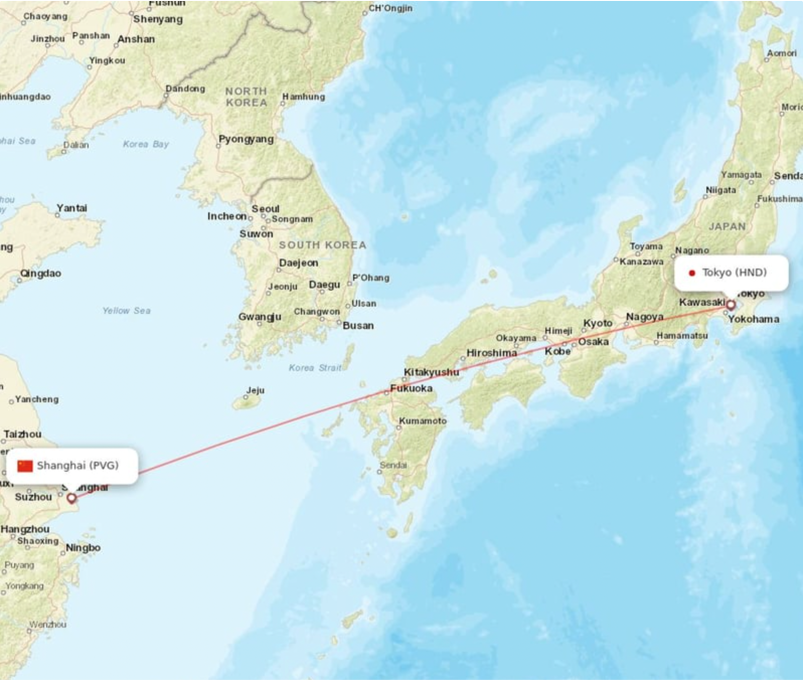

The tournament at a glance
We will have a flight tournament to figure out the most cost-effective flights between Shanghai and Tokyo based on different potential factors. Within this competitive tournament, we will follow these steps:
- Filter some flights based on objective data using visualizations
- Score the remaining flights by a weighted formula
- Figure out the most cost-effective flight
Let's focus on this route!
The Shanghai to Tokyo route, a route connecting two metropolises in East Asia, is one of the most popular flight routes in the world. This 3-hour, 1094-mile-length flight attracts many tourists, business travelers, and transit passengers (to North America). There are 23 flights from 10 different airlines, including Air China, All Nippon Airways, China Eastern, China Southern, Japan Airlines, Jetstar Japan, Juneyao Airlines, Peach Aviation, Shanghai Airline, and Spring Airlines, every day.
Why choose this route?
Among thousands of different flight routes in the world, we finally choose the Shanghai-Tokyo route because:
- There are many direct flights between Shanghai and Tokyo every day, time ranging from the midnight to the evening.
- The airlines operate this route are diverse, including full-service airlines and low-cost airlines from both China and Japan.
- This route has a relatively stable fare compared to other similar days.
What candidates do we have?
These are the Chinese candidates in detail.
- Air China: CA 157/919/923/929
- China Eastern: MU 271/521/523/537/575/727
- China Southern: CZ 8309
- Juneyao Airlines: HO 1379/1385
- Shanghai Airlines: FM 815/895
- Spring Airlines: 9C 6217
These are the Japanese candidates in detail.
- All Nippon Airways: NH 920/968
- Japan Airlines: JL 80/82/86
- Jetstar Japan: JQ 36
- Peach Aviation: MM 898
There is a bar chart below showing each airlines' flights' total seats amount for Shanghai - Tokyo route each day. All airlines are split into two group based on nations, and the total number of seats is depicted by the length of blue, horizontal bars. This plot as a whole demonstrates that Chinese airlines usually carry more passengers than Japanese airlines.
From this chart, we got a few popular airlines such as China Eastern, Japan Airlines, Air China. However, the most popular one is not necessarily the best one, which is why we have designed this tournament.